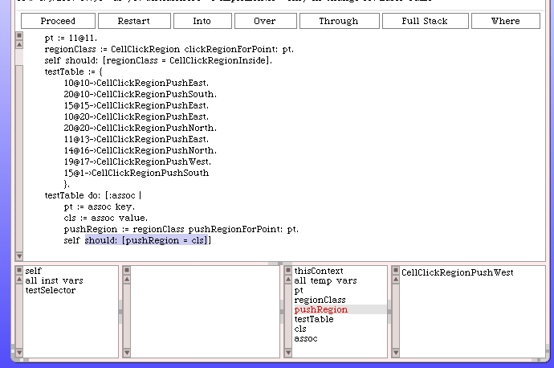

Revisiting the push points diagram and truth-table for point 20@10...

|
|


The point 20@10 clearly falls under the "heading-up" line. So the question is does point 20@10 fall under or on the "heading down" line? The code we wrote does a "<" check to see if the point falls underneath.
So a point on the line would not be under it. Therefore, consulting our truth-table, the point should result in a West push. And that's exactly what the code did.
The unit test is wrong. Fix the error and other point errors you may get when you re-run the unit tests. In each case you should use the above technique to validate if the code is wrong or the unit test is wrong.
After we correct several points in the unit test everything now passes. Here's the updated version of our test code.